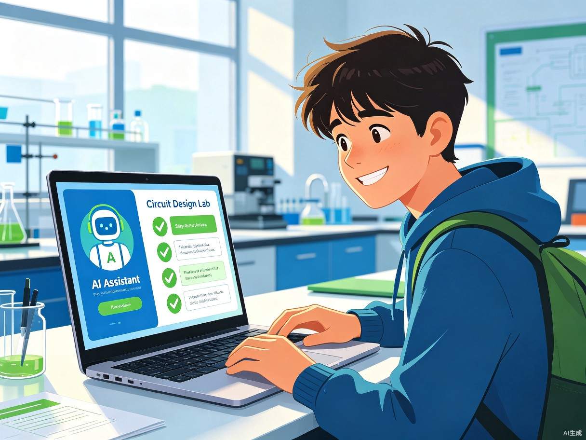
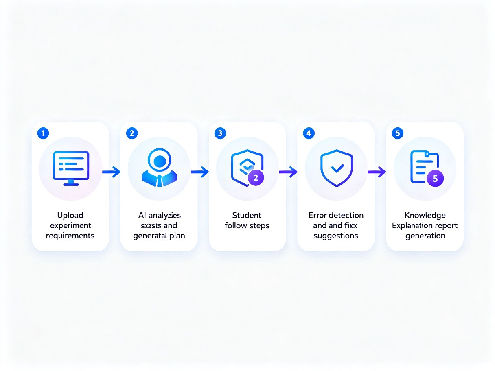
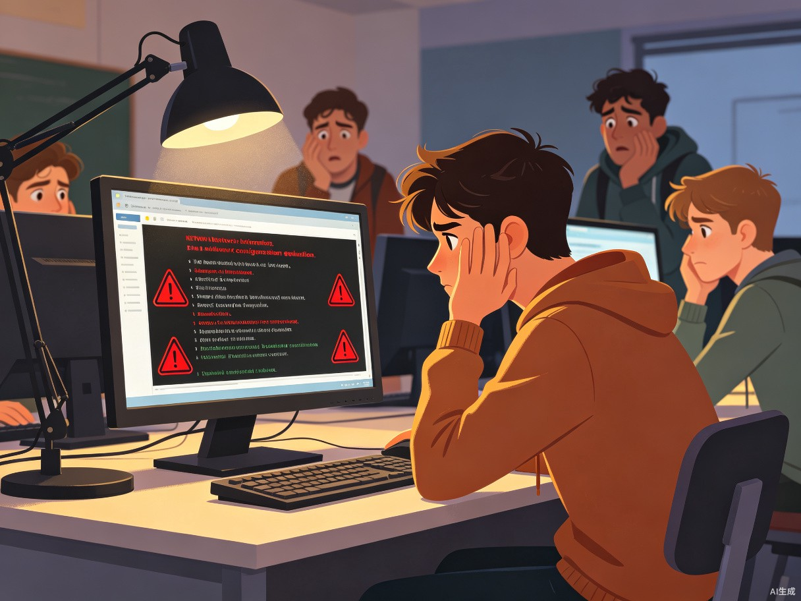

在实验课上，每个学生都可能面对无人指导的"错误黑洞"
实验课时间有限，一位老师面对几十位学生，无法逐一解答每个人的疑问，许多学生只能靠"猜"来完成实验。
平均每位老师需指导 40+ 学生一个配置错误可能导致整个实验链路不通，学生不知道错在哪里，只能逐行排查，浪费大量宝贵的学习时间。
单次排错平均耗时 2-5 小时搜索引擎返回的答案泛泛而谈，很难找到针对自己具体实验环境和配置的精准解答，信息过载反而增加困扰。
有效信息命中率 < 15%学生按步骤操作但缺乏原理理解，实验报告只能罗列步骤，无法进行深入分析和反思，影响学业成绩。
仅 30% 学生能独立完成深度报告实验侦探是一款面向理工科大学生的AI实验辅导工具。学生在做网络配置实验、电路设计实验、编程实验时，经常遇到配置出错但无人指导的问题。
只需上传实验要求或配置截图，实验侦探即可自动生成实验步骤方案、智能检查配置错误并给出修正建议、讲解相关知识点原理，就像一个7x24小时在线的实验助教。
不是简单的搜索工具，而是能理解实验上下文、分析配置截图、给出针对性指导的AI助教。

从需求解析到报告生成，实验侦探提供端到端的AI辅导体验
用户粘贴实验要求文字或上传实验截图，AI自动提取实验目标、涉及技术点、验收标准，精确理解实验意图。
根据实验类型（华为eNSP网络配置 / Multisim电路设计 / Java编程等），生成分步骤实验方案和可执行配置代码。
上传配置截图或代码，AI对比正确方案逐行检查，指出错误位置并给出修正命令，精准定位问题根源。
每个实验步骤附带相关知识点解释（如MSTP工作原理、计数器工作方式），帮助学生理解而非死记。
根据实验过程自动生成报告框架，包含实验目的、步骤记录、结果分析和原理总结，帮助学生写出有深度的报告。
简单、高效、智能的交互体验

粘贴文字或截图
提取目标与技术点
分步骤实验指导
定位问题给修正
讲解原理助报告
同一个实验，完全不同的学习体验

数百万潜在用户，刚需场景，高频使用
eNSP / HCL 配置实验
Multisim / Proteus 电路设计
编程 / 数据结构实验
嵌入式 / PLC 实验项目
实验侦探的AI能力远超传统搜索工具
AI不只是匹配关键词，而是真正理解实验的完整上下文：
支持多模态输入，直接分析实验界面截图：
对比正确方案，逐行逐项排查配置错误：
根据学生的知识水平和学习进度调整讲解深度：
实验侦探提供搜索引擎和同学互助无法替代的精准辅导
| 对比维度 | 搜索引擎 | 同学互助 | 实验侦探 |
|---|---|---|---|
| 理解实验上下文 | ✗ 不支持 | ✗ 部分理解 | ✓ 深度理解 |
| 分析配置截图 | ✗ 不支持 | ○ 口头描述 | ✓ 多模态分析 |
| 逐行错误定位 | ✗ 不支持 | ○ 依赖经验 | ✓ 精准定位 |
| 修正命令生成 | ○ 需自行筛选 | ✗ 不一定准确 | ✓ 直接可执行 |
| 原理讲解 | ○ 信息过载 | ○ 表述不一 | ✓ 系统化讲解 |
| 可用时间 | 24h | ✗ 不稳定 | ✓ 7x24h |
| 个性化程度 | ✗ 通用答案 | ○ 因人而异 | ✓ 自适应学习 |